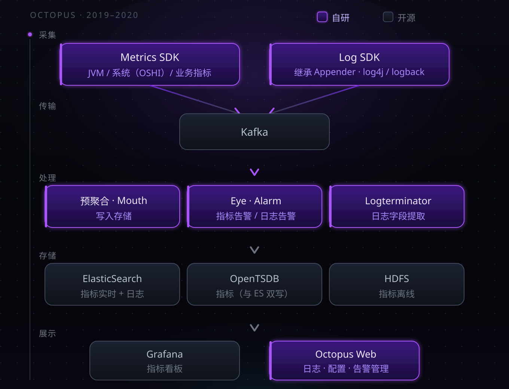
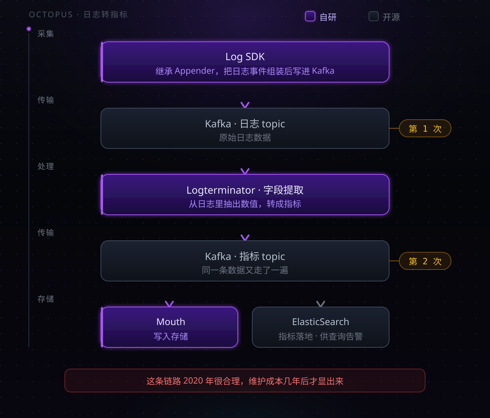

一、那时候我们以为，监控就是采集加告警
2019 年，我在写一个监控平台的第一个 SDK。
我们对自己的定位非常明确：把数据采上来，出了问题能告警。
数据只有两种——日志和指标。调用链？没在讨论范围内。不是评估后决定不做，是它根本没出现在需求里。
平台的用户是一家券商。金融场景的约束和互联网公司不一样：数据不能出域，系统不能长时间不可用，变更窗口很小。这几条约束，决定了后面很多选择。
团队 10 人左右。后端、SDK、前端，我都写。
二、整套架子长什么样

先说一个容易被误解的地方。
这套系统的"自研"，指的是采集 SDK 和平台应用层。底层全部是开源组件——Kafka、ElasticSearch、OpenTSDB、HDFS、Grafana、Redis、MySQL。
图上紫色是自研，灰色是开源。边界一目了然。
所以真正的问题不是"为什么不用开源"，而是：为什么底层用开源，上层自己写？
道理不复杂。底层是通用能力，开源已经足够成熟；上层要跟自己的数据模型、告警规则、业务语义绑在一起，没有现成的东西能直接对上。
三、埋点：让业务方只改一行配置
日志：继承 Appender
三种日志框架，log4j、logback、log4j2。
它们有一个共同点：Appender —— 日志的输出目的地。框架本身就把这个位置留给了扩展。
所以 Log SDK 的做法很直接：继承 Appender，拿到日志事件，组装成平台的数据格式，写进 Kafka。
业务方不用改代码，只改一行日志配置。
在当时这是最合适的做法：接入成本低，业务方不用学新东西，而这个扩展点本来就是为这种场景设计的。
指标：两条路
第一条，JVM 和系统指标。
JVM 相关的（堆、GC、线程）从 JDK 自带的方法取。主机系统信息，用 OSHI 采集。
这里有个实际教训。
OSHI 是跨平台系统信息采集库，一行代码就能拿到 CPU、内存、磁盘、网络。但它的开销比预期大得多——最高的时候能把 CPU 打到 100%。
被监控的应用，先被监控组件自己拖垮了。
后来我们对这块做了限制：降低采集频率、加缓存、只保留必要的字段。
第二条，业务指标。
平台提供一套 Java API，业务方在代码里主动写指标。SDK 在本地攒着，每 3 秒批量提交到 Kafka。
3 秒是权衡的结果。更短，网络和 Kafka 压力大；更长，告警延迟明显。
四、同一份数据，存两个数据库
指标同时写 ElasticSearch 和 OpenTSDB，查询的时候两个都查。
为什么两个都要？
不是为了功能互补，是为了容错。 ES 出问题可以从 TSDB 查，TSDB 出问题可以从 ES 查。
这个理由现在听起来有点朴素，但它反映的是当时真实的约束：平台上线之后必须随时能查，不允许一个存储挂掉就彻底失能。
代价也很直接：
- 双倍的写入压力和存储成本
- 两个库的查询语法、聚合能力、数据模型都不一样，查询层要抹平差异
- 两边数据对不上时，以谁为准？这是运维上长期的麻烦
用冗余换可用性，这个选择没错。但它把复杂度永久地留在了系统里。
五、从日志里榨指标
这是整套架构里最值得说的地方。

同一条数据，在 Kafka 里走了两遍。
原因很现实：日志里承载了关键业务数据。当时指标采集能力不足，很多业务关心的数值是从日志里打出来的。所以平台从日志中提取字段，转成指标，再走指标的链路存下来。
在 2020 年，这个做法是合理的——它用最小的改造成本，把已经存在的日志数据变成了可聚合的指标。
代价在几年后才显现：
- 链路长：日志延迟直接影响指标延迟
- 成本翻倍：同一条数据在 Kafka 里走两遍，处理资源也是两遍
- 口径混乱：一个数值既有日志版本又指标版本，排查问题时以哪个为准
- 强耦合：日志格式一改，指标提取规则就得跟着改
这是一个典型的临时方案演变成长期负担的案例。
后来 OpenTelemetry 把指标、日志、链路定义成三种独立信号，各有各的采集与传输路径——解决的正是这类问题。但在 2020 年，我们还没有这个视角。
六、那个不在场的东西
回到最开始的问题：为什么没有调用链？
因为没意识到它重要。
当时的注意力全在"把数据采上来"这件事上。光采集就有大量工作：SDK 要适配各种框架、要压性能开销、要保证不丢数据、要处理五花八门的环境和网络问题。
更关键的是：当时没有一种问题，逼着我们要调用链。
日志能回答"发生了什么"，指标能回答"整体趋势如何"。在业务规模还没起来、调用关系还不复杂的阶段，这两个够用了。
调用链要回答的是第三种问题：
这一个请求，慢在哪一步？
2020 年，这个问题还没频繁到非解决不可。
七、答不上来的问题
如果问我什么时候开始意识到调用链重要——
没有那个时刻。
当时很懵懂。真实的过程是：业务方的问题，越来越答不上来。
- "这个接口为什么慢？" —— 指标能看到它慢，看不到慢在哪一环
- "这次故障影响了哪些业务？" —— 日志能查到报错，串不起完整的调用路径
- "是不是下游拖慢了上游？" —— 没有跨服务的上下文，只能靠猜
日志和指标回答不了这类问题。
于是开始做评估。这是我第一次真正系统地看开源方案——之前做监控平台的时候，压根没做过方案评估，自研是默认路径。
评估的结果，是引入 APM 和调用链能力。现在回头看这一步不复杂，但在当时，"技术需要升级了"这个判断本身就是一次认知上的突破：承认现有方案有结构性缺陷，而不只是功能不够。
八、后来
当时没觉得这套架构有什么问题。
上线之后主要的工作是加采集项、调告警阈值、处理业务方的接入问题。平台一直跑着，双机房也没出过要切流的大事故。
问题是在后面几年才显出来的。
调用链是最大的缺失。补的时候不只是加一个模块——数据模型要重新设计，SDK 要加新的埋点能力，存储要换，查询层要重写。原来日志和指标那一套，基本用不上。
日志转指标那条链路后来一直在维护。新的日志格式出来，提取规则就要跟着改。这些年它一直在跑，也一直在改。
ES 和 OpenTSDB 双写保留着，两边数据偶尔对不上，需要人工核对。
有三样东西留了下来，后面几代产品还在用：Log SDK 用 Appender 扩展点接入的思路、3 秒批量上报的节奏、本地缓冲和采样的机制。
关于自研这件事，当时没觉得它是个需要讨论的问题。业务方要什么，我们就写什么。技术选型这四个字，是到做下一代的时候才开始认真对待的。
下一篇：第二代——APM 与调用链，第一次认真做技术评估，以及补上调用链的代价。